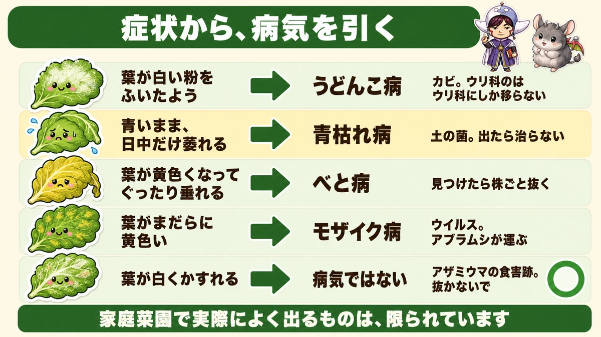
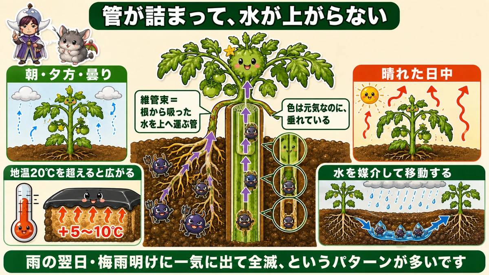
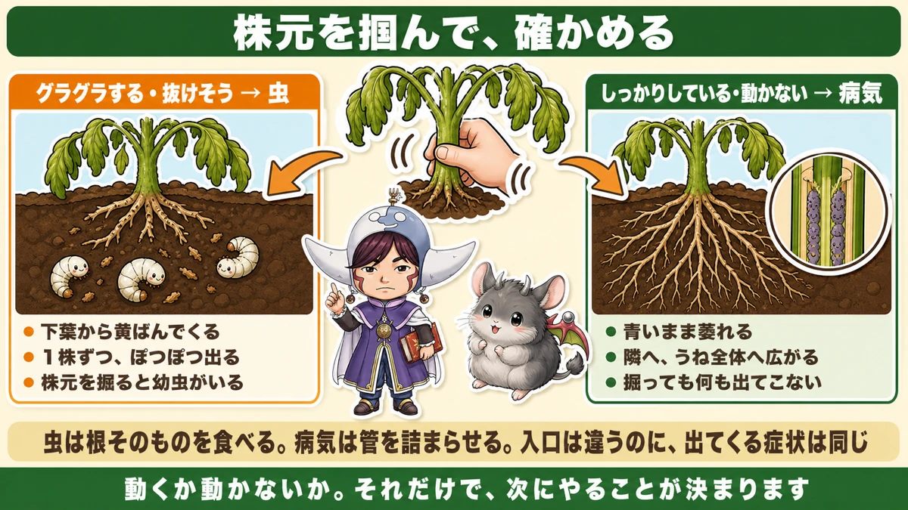
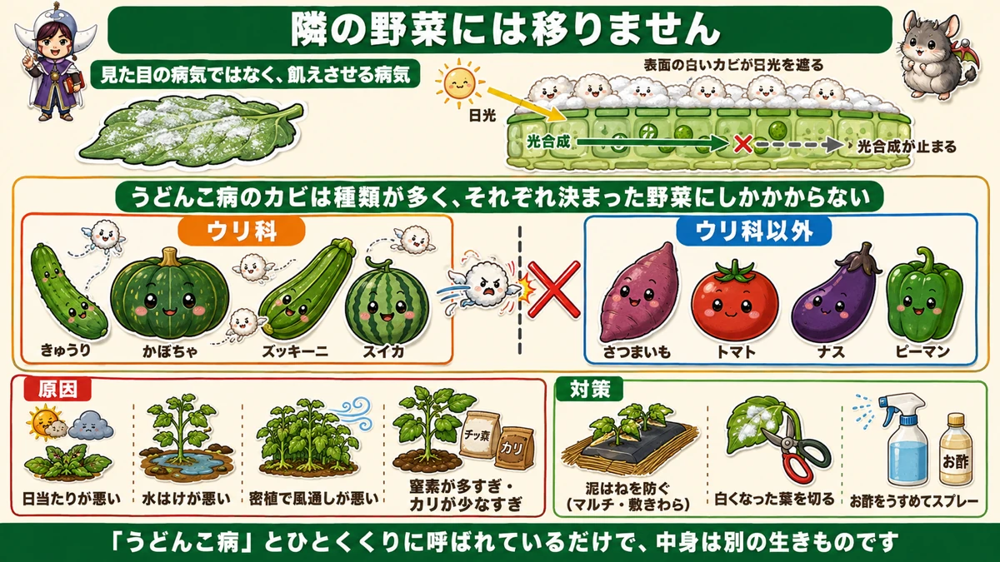

Wilted but still green? That's disease 🍅 How to tell pests from illness in one move

🍅 "The leaves have gone white, like flour."
🍅 "It was fine yesterday and suddenly it's collapsed."
🍅 "I'm worried it'll take the whole plot."
Hello, I'm Eiko. Eight years of growing vegetables organically and without pesticides, and a teaching licence in science.
The sentence I most want you to take away:
If it wilts while staying green, that's disease.
You may have heard "droops in the day, recovers at night = the roots are being eaten". That rule is about pests. There's a disease that produces exactly the same symptom, and this article is about telling them apart.

What this diagram says （図解の文字）
- Look the disease up from the symptom
- "Leaves dusted white as if with flour" → powdery mildew — "a fungus. The cucurbit one only spreads to cucurbits"
- "Wilts while still green, in the daytime only" → bacterial wilt — "a soil bacterium. Once it shows, there is no cure"
- "Leaves yellow and droop limply" → downy mildew — "remove the whole plant when you find it"
- "Leaves mottled yellow" → mosaic virus
Five is enough to learn
- Leaves dusted white → powdery mildew
- Wilts green, daytime only → bacterial wilt
- Leaves yellow and droop → downy mildew
- Leaves mottled yellow → mosaic virus
- Leaves scratched pale and silvery → not a disease at all. That's thrips feeding damage. People pull healthy plants over this, so it's worth knowing
Bacterial wilt — it droops while still green
The look is distinctive
One plant in the row will be like this:
- The leaves are deep green and healthy-looking
- And yet the whole thing is hanging limp
"Looks dead, but the colour is fine." That contradiction is the signature. Yellowing then dying makes sense; wilting while green does not, and the first time I saw it I had no idea what had happened.
It changes through the day
- Morning and evening — fairly upright
- Cloudy days — looks reasonably well
- Sunny afternoons — collapsed
Which is exactly what root damage from pests looks like.
Why

What this diagram says （図解の文字）
- The vessels block, and water stops rising
- "Morning / evening / cloudy" vs "sunny afternoon"
- "Vascular bundle = the pipework that carries water from the roots upward"
- "The colour is fine, and yet it's hanging"
- "It spreads once the soil is above 20 °C" ／ "+5–10 °C" (under black mulch)
- "It travels in water" — "the day after rain, or all at once when the rainy season breaks, and the row is lost"
The cause is a bacterium living in the soil. Nothing landed on the leaves: it enters through the roots and moves up inside the stem.
There it constricts the vascular bundles — the pipework carrying water from the roots upward, the plant's blood vessels. Block those and water stops arriving.
So on an afternoon when leaves are losing water fast, supply can't keep up. At night evaporation stops and a trickle is enough.
Pests eat the roots; disease blocks the pipes. Different entry point, identical symptom.
So how do you tell? Take hold of the base

What this diagram says （図解の文字）
- Take hold of the base and check
- Wobbly, nearly lifting out → pests. ● yellowing starts from the lower leaves ● appears one plant at a time ● dig at the base and there are larvae
- Firm, doesn't move → disease. ● wilts while green ● spreads to the neighbour, then the whole row ● digging turns up nothing
This is the practical heart of it. Hold a wilted plant by the base and rock it gently.
- Wobbly, feels like it could lift out → pests. The roots have been eaten and the anchorage is gone. Scrape the soil at the base and you'll find pale larvae
- Firm, won't move → disease. The roots are intact, so it still stands. Dig and you'll find nothing
Two more signs
Leaf colour. A pest-damaged plant yellows from the lower leaves up. Bacterial wilt stays green.
Spread. Pests take one plant here, one there. Bacterial wilt moves to the neighbour, then the one after that.
Why it moves along the row
The bacteria are in the soil, and vegetable roots reach much further than people picture — out to the shoulders of the ridge. Those roots reach the infected soil, and that's the route in.
So when one plant goes, treat the whole row as at risk. A grower I read put it as "from here you garden nervously", which is about right.
What makes it spread
Soil above 20 °C
There's a clear number: once soil temperature passes 20 °C (68 °F), it spreads readily.
Take particular care if you use black mulch. Under black film it runs 5–10 °C (9–18 °F) above air temperature — so a 20 °C forecast means 25–30 °C under the film. The mulch you laid for warmth is also good conditions for the bacterium.
It travels in water
This bacterium moves with water. Rain flows through the soil and carries it along.
Which gives the classic pattern: it spreads the day after rain, and it can take everything at once when a long wet spell is followed by heat. Where I am that's the breaking of the rainy season; wherever you are, rain and warmth arriving together is the dangerous combination.
If it does appear
Honestly: there is no cure
Once bacterial wilt shows, there is no way to fix it. Sprays don't cure it. The plant comes out.
Pull anything you suspect
I know the reluctance. But:
- Leaving it will not get you a harvest
- It will die within two to four weeks anyway
- Meanwhile it is a reservoir of infection
There is no argument for keeping it. Dig around it and lift it with the roots if you can — neighbouring roots are in there too, so if that's impractical, pulling it is acceptable.
Your secateurs carry the disease
The thing never to forget. Cut an infected plant and the sap is on the blades. Cut the next plant with them and you have moved the infection yourself.
Viruses and bacteria alike: the most reliable carrier in any garden is the gardener.
Wipe the blades with alcohol between plants. Tedious, and worth keeping up.
Powdery mildew — the white dust

What this diagram says （図解の文字）
- It doesn't spread to the vegetable next door
- "Not a disease of appearance — a disease of starvation"
- "The white fungus on the surface blocks the sunlight" → "photosynthesis stops"
- "There are many powdery mildew fungi, and each infects only its own set of vegetables"
- Cucurbits: cucumber, squash, courgette, watermelon ／ everything else: not affected
This one is named after exactly what it looks like: the leaf surface goes white, as though dusted with flour.
It's a fungus, living in the soil and carried on the wind. In my climate it runs from May to November — a long season.
It spreads when rain is followed by bright weather
A wet spell, then clear and breezy. The damp builds the fungus up, and then sun and wind launch the spores all at once. Same warning window as bacterial wilt.
Why it matters
If it were only cosmetic it wouldn't matter. It isn't. A leaf surface covered in white fungus can't photosynthesise. No light, no energy. The plant weakens steadily and eventually dies.
It's not a disease of appearance. It's a disease of starvation.
But it won't spread to the vegetable next door
Concretely: the powdery mildew on your squash infects cucurbits only — cucumber, melon, courgette, watermelon.
- It will not move to the sweet potatoes beside it
- It will not move to tomatoes, aubergines or peppers
"Powdery mildew" is one name covering several different organisms. Knowing that changes how the whole thing feels — it certainly took a weight off me.
Four causes of powdery mildew
- Poor light
- Poor drainage
- Crowded planting, poor airflow
- Too much nitrogen, or too little potassium
The first three are true of fungi generally — they like it damp and dark.
Too much nitrogen makes a soft plant
Overfeed nitrogen and the plant grows soft. Cells built in a hurry have thin walls, and thin walls are easy to get through.
And the other way: too little potassium leaves it vulnerable too. Potassium strengthens roots and raises resistance to cold and disease; short of it, the defences are thin.
Your fertiliser balance becomes your disease susceptibility.
What to do about it
① Stop soil splashing up (before it appears)
The fungus is in the soil, and rain splashing soil onto leaves is the way in.
- Black mulch film
- Straw
- Ground-cover fabric
Anything covering the ground reduces splash. Removing the lower leaves does the same job.
② Cut off the white leaves
A very small amount can clear up on its own. Once it has spread, it won't. When white patches become noticeable, cut those leaves off. Left in place they keep releasing spores, and a badly affected leaf isn't working anyway.
③ Dilute vinegar spray
A non-pesticide option. Keep it very dilute — too strong and it damages the leaves.
Four preventions that cover everything
- Airflow. Don't crowd, strip lower leaves, train and tie in
- Stop soil splash. Mulch, straw, lower leaves off
- Don't push nitrogen. A soft plant is a susceptible plant. Don't add where there's enough
- Disinfect your secateurs between plants. The gardener is the most reliable carrier, and only a tool habit stops that one
Growing without sprays makes one thing very clear: preventing disease is far easier than curing it. With no chemical to reach for, what you can do after the fact is limited — which is exactly why those four are worth the effort.
To sum up
- ✅ Wilting while green is disease (bacterial wilt), not thirst
- ✅ A soil bacterium enters through the roots and constricts the vessels so water can't rise
- ✅ Rock the base: wobbly = pests, firm = disease
- ✅ Pests yellow the lower leaves and take one plant at a time; bacterial wilt stays green and moves along the row
- ✅ It spreads above 20 °C soil temperature, and black mulch runs 5–10 °C warmer
- ✅ It travels in water — the day after rain, and when wet weather is followed by heat
- ✅ No cure. Pull anything you suspect
- ✅ Secateurs carry it. Alcohol between plants
- ✅ Powdery mildew starves the plant by blocking light
- ✅ It doesn't spread to other families — the cucurbit one stays in cucurbits
- ✅ Causes: light, drainage, crowding, too much nitrogen / too little potassium
- ✅ Prevention beats cure, by a long way
You don't have to do all of it. Go out, find the unhappiest plant, take hold of the base and rock it. Moves or doesn't move — that alone decides what you do next 🍅
Thank you for reading!